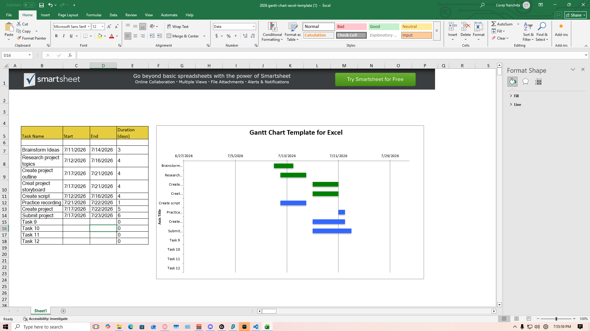

My final project idea is to dive deeper into most of everything that we have learned during this course. I want to really take a deep dive into the networking side of things and maybe the HTML and css side of things as well as thats the topic I had the most knowledge of and the topic that I like the most. I learned how important project management is. I also learned that it is extremely helpful to manage your projects for someone with ADHD. It provides structure and deadlines that make it a lot easier to get the project done before the due date.